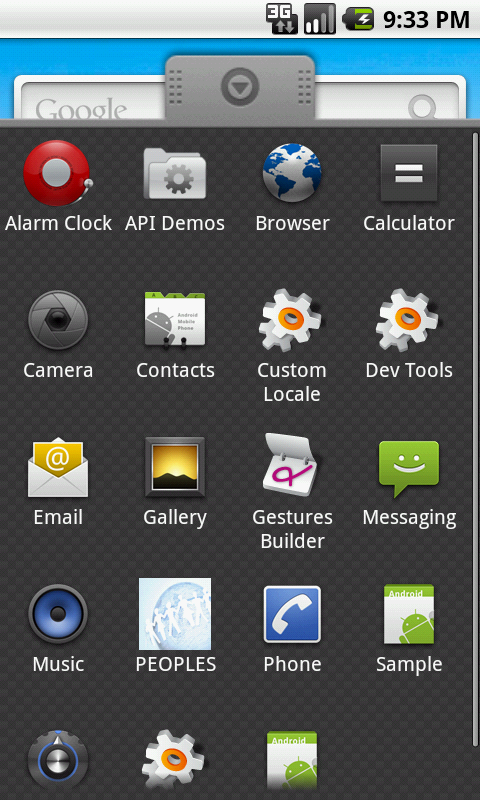
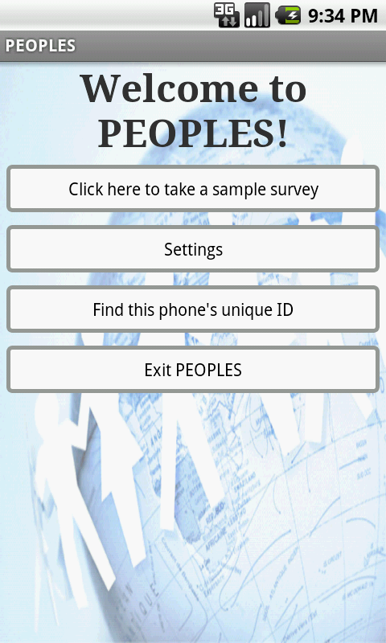
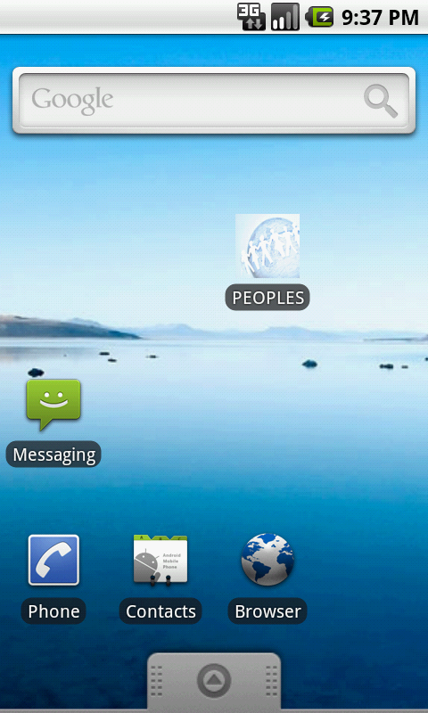
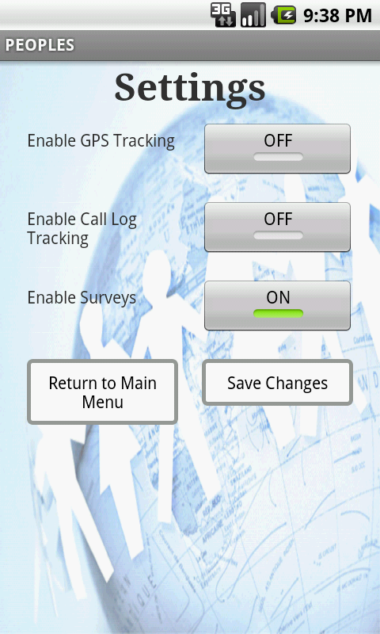
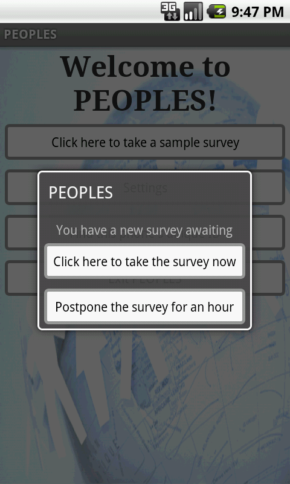
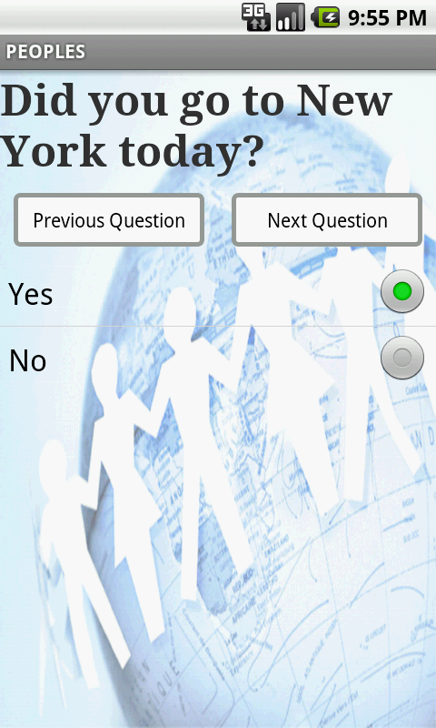
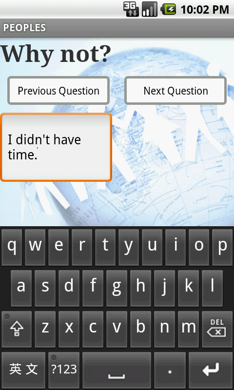
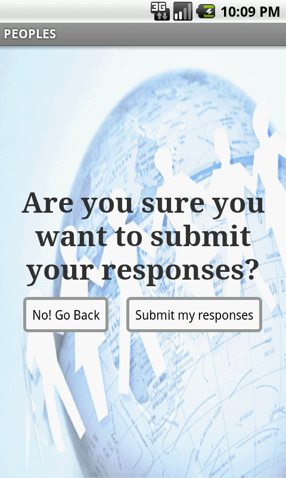
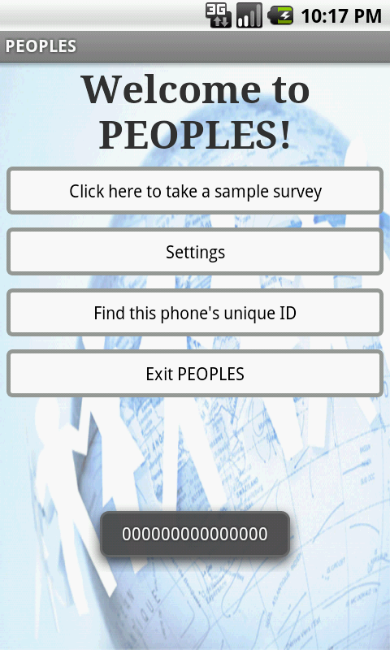

|
Computer Science 333
Advanced Programming Techniques
PEOPLES User Guide
|
Spring 2011
|
Phone User Guide
* Before starting to use the phone application: Be sure the application is installed on your phone
For installation directions, see: http://www.eigendiego.com/doc/phone-guide/install-phone.html
Contents:
- The first step is to find the application on your phone. This can be achieved by tapping the small arrow located at the bottom of your screen, and scrolling through the alphabetically listed applications to find "PEOPLES"

-
Once you have located the application, tap it gently to start the application. This should bring you to the PEOPLES welcome screen.

-
For future use, you may choose to relocate the application shortcut to your welcome screen, which can be achieved by simply holding your finger down on the PEOPLES icon for about 2 seconds.

Back to top
-
To access the settings page, tap gently on the "Settings" button from the PEOPLES welcome screen.
- You will be presented with a page which displays the following settings. Defaults are set to true.
-
Enable GPS Tracking Toggle this button on to receive GPS coordinates from your phone.
-
Enable Call Log Tracking Toggle this button on to receive call log data from your phone. Keep in mind that real phone numbers are not stored on the website, as only distinct numbers and the frequency of calls are of interest.
-
Enable Surveys Toggle this button on to receive periodic surveys throughout the day.

-
To change the application settings, simply hit the toggle button to toggle it on or off. To save your changes, press the "Save Changes" button.
-
If you wish to exit the settings menu without making any changes, press the "Return to Main Menu" button.
Back to top
-
To take a sample survey, return to the PEOPLES welcome screen, and this time, hit the "Take a Sample Survey" button.
- This will prompt a pop-up window, informing you that you have a new survey awaiting. This is the same pop-up window that will display periodically with real scheduled surveys.

-
In an ordinary survey, a postpone option is given. This option is likewise available in the sample survey. Click postpone if you wish to postpone the survey for 30 minutes. If you wish to cancel the sample survey altogether, hit the back arrow button on the physical phone.
-
Otherwise, hit the "Click to take the survey now" button. This will take some time to load, but after a bit, you should see the first question of your survey.
-
Multiple Choice Questions If the question is multiple choice, simply select your best answer, and hit the "Next Question" button.

-
Short Response Questions To reply to a short response question, tap the textbox with your finger to select it. This should prompt a touchscreen keyboard to show up. From this point, you may use the touchscreen keyboard to input your answer. Alternatively, you may slide the physical keyboard out and input your answer that way. Keep in mind that the current survey application will not turn sideways. When you are satisfied with your response, press the "Next Question" button.

-
There are many ways to navigate through the survey. After you have pressed the "Next Question" button at least once, the survey will store all your previous responses. However, if you press "Previous Question" too many times, only your response to the next question will be stored, so be careful! In a real survey, there are many branches, so your responses to multiple choice questions will determine which question is displayed when you hit next.
-
When you reach the last question, the "Next Question" button will bring you to an confirm submission screen. To submit your responses, click submit. If you wish to edit your responses some more, click "Go back"

-
If the survey results successfully submits, you will receive a message thanking you for your time. In a real survey, you will return to your phone's welcome screen, but since this is a sample survey, you return instead to the PEOPLES welcome screen.
Back to top
-
Phone unique ID To find your phone's unique identification number, simply hit the button. This should bring up a temporary textbox with the desired String. This is the deviceID that should be entered on the website when registering a new phone.

-
Exiting PEOPLES To exit the application, hit the "Exit PEOPLES" button. This will bring you to your phone's default screen. Note that the exit button does not disable the application altogether, but merely closes the administration pane. To turn off the application, simply navigate to the settings tab and turn all features off. In the very unlikely event that the application locks up or caused unwanted behavior, Settings->Applications->Manage Applications->PEOPLES->Force Stop will kill the application.
-
Real Surveys Real surveys should pop up throughout the day at predetermined times, as specified on the web end. These will look identical to the pop-up window in the sample survey, but without the administration panel in the background.
Back to top